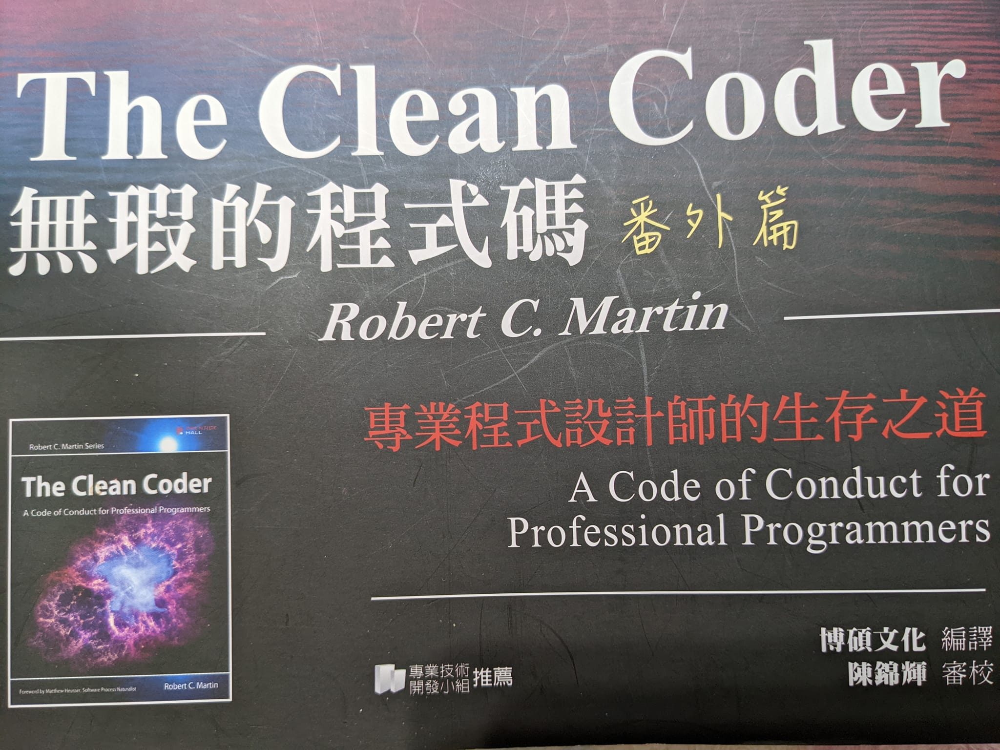

無瑕的程式碼番外篇 - 專業主義

大家好，我是 Cindy，最近發現無暇程式碼的番外篇蠻好看的，適合在職場打滾的工程師們看，比起 clean code，the clean coder 比較算是軟實力的部分，主要是在說身為一個專業的工程師應該要有怎麼樣的態度、原則與行動。在寫此篇文章的時候我剛看完一到六章，本來想一口氣寫完，寫著寫著發現越寫越太多，所以我還是分一下篇幅好了，之後一到兩個章節寫一篇文章，這篇會是第一章節的重點及心得整理。
這章節主要在告訴大家什麼是專業主義，也許直接看每個小節的標題(我列在下面囉)，大家會覺得理所當然，但真的有多少人可以做到呢？
- 清楚你要什麼
- 擔當責任
- 首先，不要做損害的事
- 不要破壞軟體功能
- 讓 QA 找不出任何問題
- 要確信程式碼正常工作
- 自動化 QA
- 不要破壞結構
- 職業道德
- 了解你的領域
- 堅持學習
- 練習
- 協作
- 輔導
- 了解業務領域
- 與雇主／客戶保持一致
- 謙遜
作者在擔當責任的小節裡講述了他真的因為不負責任嚐盡苦頭的故事，這裡的不負責任也許就發生在大家的周遭，因為時程很趕，作者拼了命的在約定日前交付，最後卻是一場災難，因為沒有寫測試，程式上線後，本來固定夜間傳送報告的程式出錯了，最快的解決方法是回到上一個版本的程式碼，客戶遺失了整晚的資料，還無法使用原先承諾的新功能…。作者反思他不應該只顧保全自己的顏面，應該提早說出測試還沒完成的問題，老闆可能會不高興，但是客戶不會遺失資料…。
有時候我看這本書會覺得作者會不會有點兇 XD 不知道跟翻譯有沒有關，還是本來就這麼兇 XDDDDD
畫重點
- 什麼樣的程式是有缺陷的？那些你沒把握的都是！
- 我不是在建議，我是在要求！你寫的每一行程式碼都要測試，就這樣！
- 要設計 『易於測試的程式碼』。
- 如果你希望自己的軟體靈活可變，那就應該時常修改它！
- 讓軟體保持固定不變是危險的！如果一直不重構程式碼，等到最後不得不重構時，你就會發現程式碼已經『僵化了』。
這裡讓我想到之前看到蒼時大大寫的文章：軟體是一種生物，推薦大家去看看。
- 不能銘記過去的人，注定重蹈先人的覆轍。
我在這邊想到，如果可以站在巨人肩膀上，我們又為什麼硬要自幹程式碼然後去走那些巨人們踩過的雷勒？卡米大大的 軟體開發者的培養 也有提到類似的概念，推薦給大家。
每個專業軟體人必須精通的事項
- 設計模式
- GOF
- POSA
推薦大家這個網站 DESIGN PATTERNS
- 設計原則
- SOLID
我之前的文章有提到過唷，大家可以去 Ruby 物件導向設計實踐－敏捷入門 看看。
- 元件設計原則
參考：
- SOLID
- 方法
- 學科
- 工具：
花了一些時間查資料，說明我並非所有列出來的事項都相當理解，反省中，下一篇會介紹工程師什麼時候說是，什麼時候說不，歡迎大家繼續看下去。